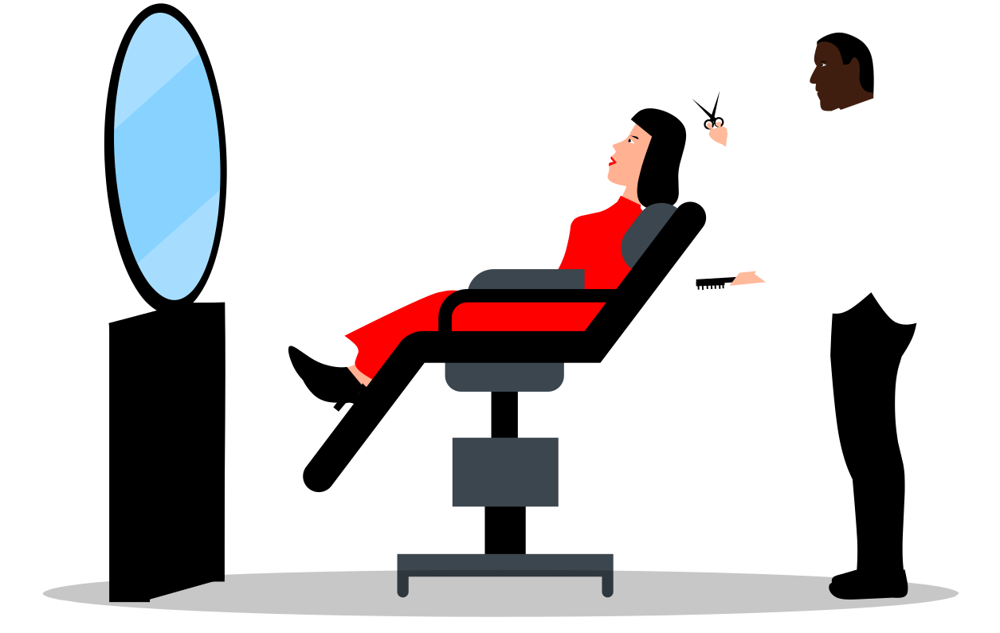

Zadbaj o swoje włosy z najlepszymi
Chyba od zawsze włosy odgrywały ważną rolę w życiu ludzi. I nie chodzi tutaj wyłącznie o
kobiety,
jak
mogłoby się wydawać. Piękne, zadbane i zdrowe włosy stają się w jakimś sensie naszą wizytówką.
Poprzez
naszą
fryzurę często przedstawiamy wszystkim dookoła naszą osobowość i nasz wyjątkowy charakter. To
dlatego
eksperymentujemy i szukamy dla siebie takiego rozwiązania, które będzie do nas najbardziej
pasowało.
Dlatego też, swoje włosy powinniśmy oddawać wyłącznie w ręce prawdziwych profesjonalistów. Tylko
ludzie
z
pasją do fryzjerstwa są w stanie wydobyć z włosów ich prawdziwe piękno, które może stać się
naszym
znakiem
rozpoznawczym. Doskonałym wyborem z pewnością okaże się więc najlepszy fryzjer Kraków – U
Pawełka.
To
tutaj
znaleźć możesz zespół doświadczonych fachowców, którzy potraktują Twoje włosy, tak jak na to
zasługują.
Z
wizyty w naszym salonie wyjdziesz z piękną fryzurą i pokładami nowej energii.

U Pawełka – znamy się na włosach, jak nikt inny
Wbrew pozorom fryzjerstwo to bardzo trudny zawód, który wymaga ogromnego zaangażowania ze strony
osoby,
która chciałaby go wykonywać dobrze. Tak naprawdę więc cały czas musimy poszerzać swoją wiedzę
na
temat
nowoczesnych technik strzyżenia, stylizacji, koloryzacji czy pielęgnacji włosów. Trzeba wciąż
poznawać
możliwości pojawiających się na rynku produktów i sprzętów, ale przede wszystkim należy
nieustannie
śledzić
zmieniające się trendy.
U Pawełka doskonale zdajemy sobie z tego sprawę i jako najlepiej wykwalifikowany fryzjer Kraków
stajemy
na
wysokości zadania. Chcemy, aby nasi klienci mogli korzystać z najwyższej jakości usług, które
spełniają
światowe standardy. Dlatego cały czas zdobywamy nową wiedzą i umiejętności na szkoleniach w
kraju i
za
granicą. W tym zawodzie nie można stać w miejscu, aby nie rozczarować osób, które powierzają nam
swoje
włosy
i w dużej mierze swój image. Mamy tego świadomość i robimy wszystko, aby spełnić wasze
oczekiwania.
Idealny fryzjer Kraków – cenimy sobie różnorodność
Każdy z naszych klientów ma inny rodzaj włosów, które mają inne potrzeby i wymagają
odpowiedniego
traktowania. Każdy z nich ma również inną osobowość, charakter i oczekiwania dotyczące swojego
wyglądu.
Siadając na fotelu fryzjerskim każdy z nich chce też, by spełniły się jego marzenia o idealnej
fryzurze
i my
te marzenia spełniamy. Gwarantujemy, że kiedy zajmie się Tobą fryzjer damski i fryzjer męski
Kraków,
Twoje
włosy znajdą się w profesjonalnych rękach.